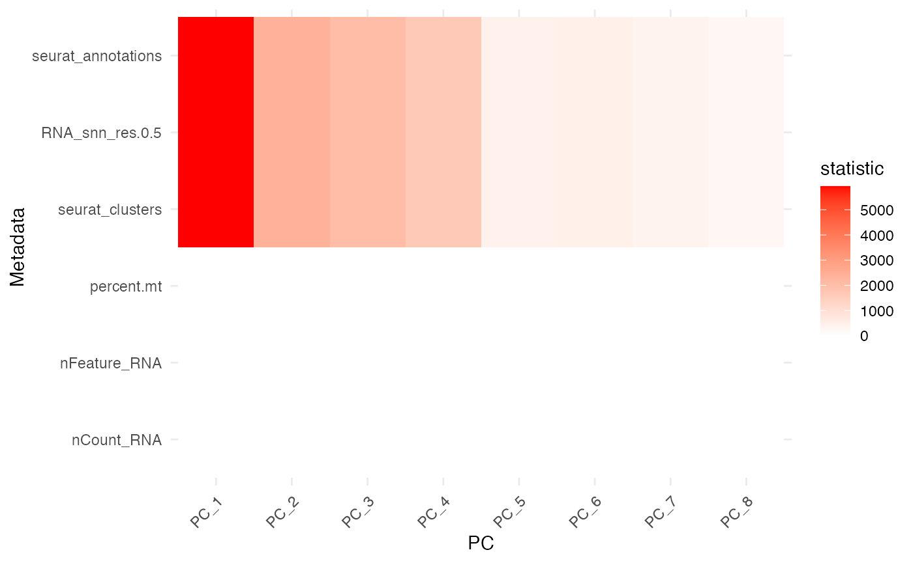

Get started
This vignette demonstrates how to use
pc_meta_correlations on Seurat data and visualize the
results.
Linear-model mode
The default analysis mode is lm, which fits a separate
linear model for each metadata/PC pair.
Seurat built-in example
if (!requireNamespace("Seurat", quietly = TRUE)) {
stop("Please install Seurat to run this example.")
}
data("pbmc_small", package = "SeuratObject")
seurat_obj <- pbmc_small
res <- pc_meta_correlations(seurat_obj, reduction = "pca", mode = "lm")
head(res)
#> metadata pc type statistic p.value effect_size direction
#> 1 nCount_RNA PC_1 numeric -0.001260951 4.509012e-01 0.001260951 negative
#> 2 nCount_RNA PC_2 numeric 0.003992369 1.251218e-05 0.003992369 positive
#> 3 nCount_RNA PC_3 numeric -0.000434337 5.827720e-01 0.000434337 negative
#> 4 nCount_RNA PC_4 numeric -0.002762158 1.441718e-05 0.002762158 negative
#> 5 nCount_RNA PC_5 numeric -0.001299648 3.406225e-02 0.001299648 negative
#> 6 nCount_RNA PC_6 numeric 0.001801481 1.747174e-03 0.001801481 positive
#> adj.p.value
#> 1 0.8720628761
#> 2 0.0002037698
#> 3 0.8992615761
#> 4 0.0002054448
#> 5 0.2043734863
#> 6 0.0165981500Plot the Seurat example
plot_pc_meta_heatmap(res)
plot_top_pc_meta(res, n = 5, value = "effect_size")
Richer metadata example
The SeuratData package provides larger example datasets.
If installed, pbmc3k.final contains more metadata columns
and strong PC associations.
if (requireNamespace("SeuratData", quietly = TRUE)) {
SeuratData::InstallData("pbmc3k")
data("pbmc3k.final", package = "pbmc3k.SeuratData")
pbmc3k.final <- Seurat::UpdateSeuratObject(pbmc3k.final)
res2 <- pc_meta_correlations(pbmc3k.final, reduction = "pca", mode = "lm")
head(res2)
plot_pc_meta_heatmap(res2, top_n = 15, top_pcs = 8)
}
#> Warning: The following packages are already installed and will not be
#> reinstalled: pbmc3k
#> Validating object structure
#> Updating object slots
#> Ensuring keys are in the proper structure
#> Updating matrix keys for DimReduc 'pca'
#> Updating matrix keys for DimReduc 'umap'
#> Warning: Assay RNA changing from Assay to Assay
#> Warning: Graph RNA_nn changing from Graph to Graph
#> Warning: Graph RNA_snn changing from Graph to Graph
#> Warning: DimReduc pca changing from DimReduc to DimReduc
#> Warning: DimReduc umap changing from DimReduc to DimReduc
#> Ensuring keys are in the proper structure
#> Ensuring feature names don't have underscores or pipes
#> Updating slots in RNA
#> Updating slots in RNA_nn
#> Setting default assay of RNA_nn to RNA
#> Updating slots in RNA_snn
#> Setting default assay of RNA_snn to RNA
#> Updating slots in pca
#> Updating slots in umap
#> Setting umap DimReduc to global
#> Setting assay used for NormalizeData.RNA to RNA
#> Setting assay used for FindVariableFeatures.RNA to RNA
#> Setting assay used for ScaleData.RNA to RNA
#> Setting assay used for RunPCA.RNA to RNA
#> Setting assay used for JackStraw.RNA.pca to RNA
#> No assay information could be found for ScoreJackStraw
#> Warning: Adding a command log without an assay associated with it
#> Setting assay used for FindNeighbors.RNA.pca to RNA
#> No assay information could be found for FindClusters
#> Warning: Adding a command log without an assay associated with it
#> Setting assay used for RunUMAP.RNA.pca to RNA
#> Validating object structure for Assay 'RNA'
#> Validating object structure for Graph 'RNA_nn'
#> Validating object structure for Graph 'RNA_snn'
#> Validating object structure for DimReduc 'pca'
#> Validating object structure for DimReduc 'umap'
#> Object representation is consistent with the most current Seurat version